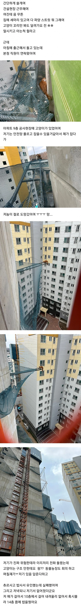
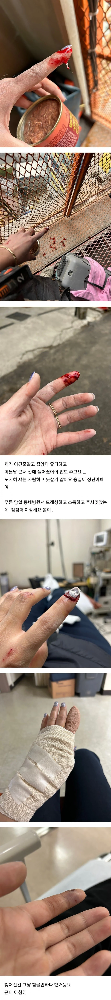
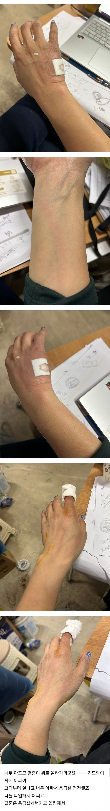
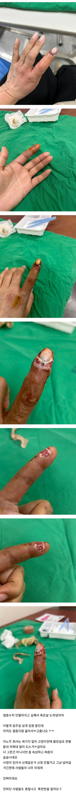

으 진짜 ㅈㄴ시름
이런거보면 발톱조금 스쳣을때 아프다구 화냇는데 평소 집에냥이들이 얼마나 봐줬는지.. 고맙네;
존나불쌍하다
저런 건 잡을 생각 말고 쫓아야 함. 돈 들여서 미끼로 쓸 먹이 사지도 말고. 먹을 거 없으면 알아서 나감.
털바퀴 독뎀 딜 오지네
고양이 한테 팔같은데 할큄 당하면 흉터 없어지지도 않음 ㅋㅋ
겨우 고양이한테 물린거 가지고 엄살 개엄살을 ㅋ
고양이 좋아하면 감.내.하.세.요
괜히 털바퀴가 아니여
저러니까 캣맘하는구나..
글을 각자 보고싶은대로만 보네
야생동물은 아무래도 우리 생각보다 세균 덩어리니까
가끔 사람들이 착각하는게 자연은 깨끗하다 어쩐다 하는데
흙에도 세균이 ㅈㄴ 많아서 상처로 들어가면 병걸리고
물만 해도 1급수가 아니고서야 보기엔 깨끗해보여도 정수기보다 이것저것 많아서 탈날수도 있고 그런거니까
성체급 길냥이면 쥐도먹고 벌레도먹고 음쓰도 먹고할테니 바이러스 덩어리임 ㅠㅠ
고생했노
어우 저러다 손가락 절단하는 거 아니냐 ㄷㄷㄷ
말투에서 지능 존나 낮은 거 티가 확 나네
고앵이 시발련
그런데 작업장에서 업무랑 상관없이 임의로 고양이 잡다가 다쳐도 산재가 되나?
쳐 도망가고 물고 그러면 그냥 죽여라 뭔 고생이냐 ;
길고양이
존나 더러움. 겨울엔 하수구에서 바퀴벌레랑 같이삼